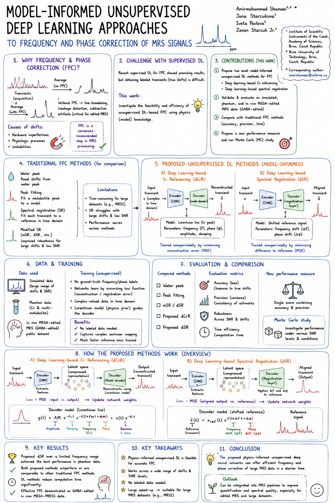

Signal correction · Publication
DeepFPC
Two model-informed neural networks trained without labeled frequency or phase shifts to provide efficient correction of simulated, phantom, and edited in-vivo MRS data.

Signal correction · Publication
Two model-informed neural networks trained without labeled frequency or phase shifts to provide efficient correction of simulated, phantom, and edited in-vivo MRS data.
